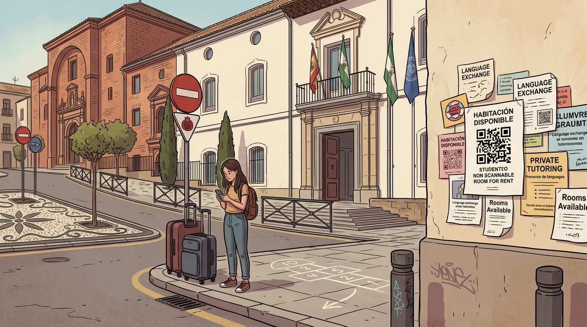
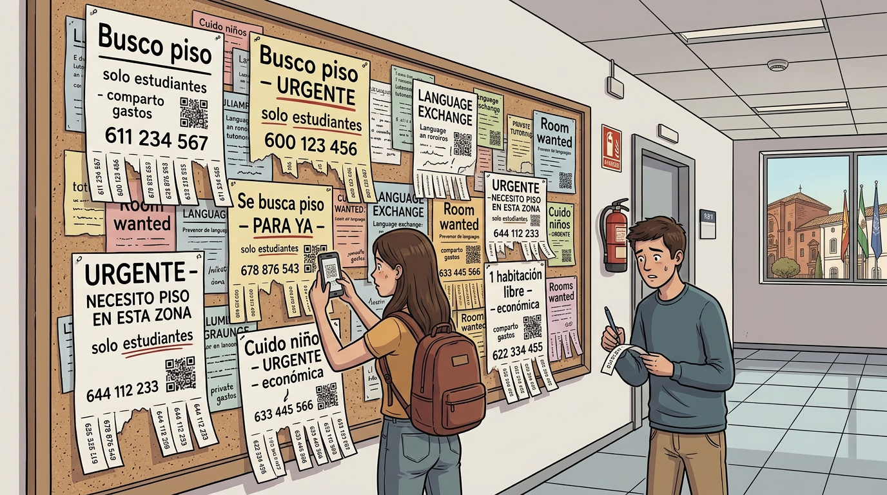

The Student Who Stayed On
Lodging and the City’s Quiet Failure
The university city, in its classical conception, requires that the students it admits should also be able to live in it. This requirement has been reclassified, in the current market, as a preference rather than a condition, which has simplified a great many planning decisions.
What follows is, more or less, the report of a person who arrived in this city as a student, did not quite leave, and has been watching the same six or seven streets behave in a particular way through roughly the same set of windows for rather longer than he had planned.
The streets in question are the ones the various faculties of the university happen to occupy, and the buildings most directly relevant are the ones in which, until perhaps a decade ago, students were the default and almost only tenants. The inversion has not been dramatic. There has been no single August in which the piso de estudiantes announced its conversion. The change has proceeded by attrition: a contract not renewed, a flat refurbished and reclassified, a notice in a window whose grammar has shifted from se alquila a estudiantes to se alquila por habitaciones, días o semanas, and finally to a small QR code routed through one of the platforms that have come to be the only interface the building has with anyone seeking to enter it. The cumulative effect, on a stretch of street the chapter could name and would prefer not to, is that a building which once accommodated four flats of four students each now accommodates a different number of a different kind of guest, on contracts of a length the city’s existing stock of ordinary leases has no instrument to defend itself against.
The mechanism is not local. A recent and unsentimental review of the question, prepared from the side of the residents rather than the side of the platforms, sets out the central finding without ornamentation: in cities whose long-term rental markets are already structurally short of supply, the conversion of housing into short-stay tourist accommodation reduces to a marginal minimum the probability that a resident or worker — and, by extension, a student — will encounter a long-term let at a price related to local incomes (Centeno & López, 2025). The verb that the report uses is reduce, not displace; the difference matters. Displacement implies that someone else has taken the space. Reduction implies that the space has been removed from the category in which the student was looking, and re-entered the market under a heading the student does not have the budget to read.
The Spanish tourism sector recorded in the order of 83.7 million international arrivals in 2024, with the post-pandemic recovery confirmed across every leading indicator and aggregate sector value forecast to approach 260 billion euros for 2025 (World Travel & Tourism Council, 2025). In June of the same year, simultaneous demonstrations in Barcelona, Palma, San Sebastián and Granada placed the question of mass tourism, and specifically of its housing consequences, on the front page of the national press (RTVE, 2025). The Organización de Consumidores y Usuarios, in its review of the same period, treats the proliferation of unregistered short-stay flats as the single most significant variable distorting the long-term rental market in cities with chronic housing shortages (Organización de Consumidores y Usuarios, 2025). Granada appears on every one of these lists; the chapter need not labour the point.
The experience of the student arriving in September I cannot describe without slipping, here and there, into a register the rest of the volume has been trying to avoid; the irony, as elsewhere, will have to live in the precision and not in the indignation. She arrives with a list of viewings printed from a platform whose listings have a half-life measured in hours. Two of the addresses do not exist; a third corresponds to a room she will share with a tenant already installed and unmentioned in the listing; a fourth has been re-let between the morning of the printout and the afternoon of the visit. The fifth viewing actually takes place. The room is approximately the dimensions promised. It is, she is also told, an individual room — with the small clarification, produced in the same tone as the dimensions, that its present occupant happens to be away on account of work for most of the academic year, and that on the occasional weekend on which she does return, one of the two parties presently holding the room can be relied upon to take the living-room sofa for the duration. The visitor is invited to assume that this arrangement is peculiar to this room and that no comparable arrangement obtains in either of the other two rooms in the flat, on the grounds that such a coincidence would be improbable.
The deposit requested at the door is not the dimensions promised either, and has a further feature the visitor will not verify until well after she has paid it: in a meaningful proportion of cases, the sum the new arrivals contribute is the sum from which the outgoing tenants will recover the rent of their own last month or two. The two parties are not, properly speaking, in conflict — both would prefer not to be defrauded — but the older tenant, finding himself in a small position of informational advantage over the new one, has elected to imitate the practices of the proprietor rather than to warn against them, and the imitation has the additional convenience of being invisible until the handover is complete. Where an estate agency has been interposed between the parties, the arrangement becomes harder to read rather than easier: a third actor appears whose function is, in principle, to formalise the transaction, and whose contribution in practice is to lend administrative cover to whichever of the foregoing manoeuvres the immediate market conditions reward. Certain features of moral character, it turns out, travel rather easily between actors who had been assumed to occupy different sides of the same door. The agency fee, prohibited by the 2019 reform of the urban tenancies law, returns under the formula gastos de gestión and is presented as non-negotiable. The contract on offer is for nine months, on the working understanding that summer is when the landlord prefers to test the rental against a different category of guest. None of the foregoing is exceptional; all of it is reported, with the regularity of a meteorological observation, by every cohort of arrivals I have spoken to in the last several years.

Plate VIII. Façade and doorway, central Granada, early September, mid-morning. The doorway gives access to one of the historic faculties of the university, which is functioning and flies three flags — national, regional, and European. The adjacent wall, which is not institutional, has been given over to the informal housing market: notices announce rooms available, language exchanges, private tutoring, and at least one room described as non-scannable, a property whose relevance to the prospective tenant has not been explained; the QR codes are sharp, the typography is competent, and the contact details are not local. In the foreground, a student stands on the pavement between two suitcases, consulting her telephone; her expression suggests that the listing she is reading was accurate at the time of posting. On the ground at her feet, a hopscotch grid has been chalked by parties unknown and for purposes unrelated to housing. Two no-entry signs are visible to the left; their jurisdiction does not extend to the rental market. The flags continue to fly. The provenance of the scene is not in dispute; it has been documented across Mediterranean university cities for the better part of a decade without material variation.
I notice that I am within a sentence of beginning to list the landlords, and I should stop. The argument is not that landlords were once virtuous and have lately become predatory. Landlords have always been the variable in the system most attentive to the system’s incentives. What has changed is the system. The structural ratio between rooms available at prices a student grant can absorb and students requiring such rooms has shifted, and the shift has a documented mechanism, and the mechanism is not the moral character of any individual proprietor. To make the chapter about individual proprietors would be to mistake the symptom for the cause and to deliver, in passing, the small consolation that the problem is one of bad apples — a consolation the present volume is not in a position to extend.
The forced cohabitation that follows is the part that does not appear in any indicator. Four people who have not chosen one another, and in many cases share neither language nor schedule, occupy seventy square metres because none of them, individually, can support the rent of the small flat each of them would, if asked, have preferred to occupy alone. The arrangement is not without its consolations: people meet in this way, and some of those meetings outlast the lease. The arrangement is also not without its costs, and the costs are distributed in the manner the housing market generally distributes costs, which is to say onto the party with the least capacity to defuse them. The student whose grant arrives in three instalments, and whose family cannot wire the difference, will accept the room with the unventilated interior wall, the radiator that has been disconnected since the previous summer, and the housemate whose hours are exactly opposed to her own. She will accept these things because the alternative is not a better room. The alternative is the village forty minutes down the line, where a room can still be had at a price related to its physical properties, and where she will spend in transport, in meals taken outside a kitchen she does not effectively have access to, and in the cumulative small economies of being far from the place she is supposed to be studying, the difference she has just saved on rent. The arithmetic, considered honestly, does not favour anyone. It redistributes the location of the deduction within the same monthly transfer.
The literature on this is not new, and I will glance at it rather than rehearse it. Cócola-Gant has documented, with respect to several southern European cities, the sequential character of tourism-led displacement: residents first, then workers, then students, then the institutional functions for whose sake the city was once thought worth preserving (2018). Zukin’s contribution, which the previous chapter has already drawn on, is the observation that a city becomes illegible to the people who need it as an apparatus of formation at the moment it has reorganised itself around people who need it as a backdrop for consumption (2010). Both authors have had the patience to make the case at length, and both, I notice, have been read more often than they have been acted upon.
The second self-correction the chapter requires is to do with the temptation to convert the diagnosis into a recommendation. The temptation is strong because the recommendations are obvious: a regulated cap on short-stay licences in central districts, an honest enforcement of the existing prohibition on agency fees, the construction of student residences at a scale commensurate with the matriculation figures the university itself publishes.1
The chapter has, until this point, declined this kind of temptation on a principle worth stating once: the absence of the obvious measures is not a gap in the diagnosis. It is the diagnosis. A city in which the obvious measures have been available for years, and have not been taken, is a city whose decision-making apparatus has settled on a different priority, and the priority has, for the moment, the wind behind it.
The chapter will allow itself, in this single section, one departure from the rule, under cover of an analogy the reader is free to refuse if the cover seems insufficient. We do not ask of a competent professional that she be expert in everything; we ask only that she be competent within the epistemic margins her formation has actually equipped her for, and we treat any wider demand as a mistake about what training is. The same charity might reasonably be extended to a residential district. The streets immediately around the faculties of a university are not, by any plausible reading of their morphology, designed to operate simultaneously as tour operator, hotel chain, short-stay platform, residential let and student residence, while still discharging the residential function for which they were laid out; the cumulative request that they perform all of these at once is the request that has produced the conditions this chapter has been describing. To the institutions presently authorised to act on the matter — and which, while presumed competent, have for some time given little conspicuous evidence of being diligent — the chapter is willing to direct, on this single occasion, what would in any other section of the volume be classified as a recommendation. It is that the years a young person sets aside in order to train for a serious profession should not, in addition to everything else they cost, also be the years in which she is required to develop her resistance to small structured frauds and to the unannounced reorganisation of her own domestic arrangements; and that the provision of safe and unfraudulent lodging within reach of the lecture rooms she is matriculated to attend is, on any reasonable reading of the public interest, a function the responsible authorities are expected to guarantee rather than to outsource. The recommendation is so basic that the chapter is mildly embarrassed to have to make it, and would prefer to attribute the embarrassment to the institutions whose inaction has made the making of it necessary.
The closing observation is the one I cannot quite soften. The shortage of student housing in Granada is not a problem of the housing market in the narrow sense in which such a problem admits of housing-market solutions. It is the visible edge of a slower process by which the city has stopped reproducing the conditions of its own intellectual life. Universities, in the old understanding, were among the institutions a city built so that its future would arrive on time and would have been prepared for; the arrangement was reciprocal, in that the university supplied the formation and the city supplied the room in which the formation could take place. The reciprocity is being quietly dissolved on one of the two sides, and the side that is dissolving it is not the one with the bookcases. The student who has stayed on, and who has now spent enough years watching the dissolution to know what it is, is in no position to reverse it. He is in a position to record it, and — on the rare occasion when the omission would amount to a kind of cowardice — to make the small recommendation he has just made. These are the lesser of the two functions a serious description of a city is supposed to perform, and the only ones this chapter has been willing to undertake.

Plate IX. Faculty entrance hall, University of Granada, academic year in progress. The noticeboard, a civic instrument traditionally reserved for the dissemination of academic events, administrative deadlines, and language-exchange opportunities, has been substantially repurposed. Of the notices legible at the time of depiction, the majority seek accommodation with immediate effect, several underline the word urgente, and at least two have thought it necessary to specify solo estudiantes, presumably to distinguish their authors from the other categories of applicant competing for the same rooms. A language-exchange notice survives in the upper right quadrant; its continued presence is noted. One student photographs the board systematically; another stands to the side holding a notepad, his expression that of someone revising downwards an estimate he had already revised downwards once. A fire extinguisher is mounted on the adjacent wall and is, at this stage, not required.
The figures in question are not trivial. The Ministry of Science’s historical series records 58,974 students enrolled at the University of Granada in 1989–1990, rising to 60,533 by 1991–1992 and returning to 56,964 by 1995–1996 — figures which refer to undergraduate enrolment only, under the pre-Bologna degree structure (Ministerio de Ciencia, Innovación y Universidades (Spain), n.d.a, n.d.b). The university currently reports in excess of 70,000 students across all levels (Universidad de Granada, n.d.). The city’s housing stock has not been recalibrated to accommodate a student population of this magnitude at any point in the intervening three decades; the recalibration that has occurred has moved in the opposite direction.↩︎